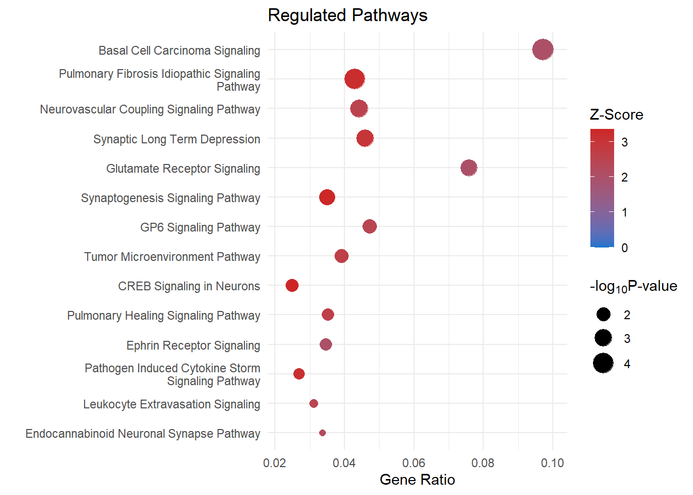

Additional Figures
Ha Tran
24/12/2021
Last updated: 2022-11-05
Checks: 7 0
Knit directory: SRB_2022/1_analysis/
This reproducible R Markdown analysis was created with workflowr (version 1.7.0). The Checks tab describes the reproducibility checks that were applied when the results were created. The Past versions tab lists the development history.
Great! Since the R Markdown file has been committed to the Git repository, you know the exact version of the code that produced these results.
Great job! The global environment was empty. Objects defined in the global environment can affect the analysis in your R Markdown file in unknown ways. For reproduciblity it’s best to always run the code in an empty environment.
The command set.seed(12345) was run prior to running the
code in the R Markdown file. Setting a seed ensures that any results
that rely on randomness, e.g. subsampling or permutations, are
reproducible.
Great job! Recording the operating system, R version, and package versions is critical for reproducibility.
Nice! There were no cached chunks for this analysis, so you can be confident that you successfully produced the results during this run.
Great job! Using relative paths to the files within your workflowr project makes it easier to run your code on other machines.
Great! You are using Git for version control. Tracking code development and connecting the code version to the results is critical for reproducibility.
The results in this page were generated with repository version cc4bf5d. See the Past versions tab to see a history of the changes made to the R Markdown and HTML files.
Note that you need to be careful to ensure that all relevant files for
the analysis have been committed to Git prior to generating the results
(you can use wflow_publish or
wflow_git_commit). workflowr only checks the R Markdown
file, but you know if there are other scripts or data files that it
depends on. Below is the status of the Git repository when the results
were generated:
Ignored files:
Ignored: .Rhistory
Ignored: .Rproj.user/
Untracked files:
Untracked: .gitignore
Untracked: 0_data/
Untracked: 1_analysis/
Untracked: 3_output/
Untracked: LICENSE.md
Untracked: README.md
Untracked: SRB_2022.Rproj
Note that any generated files, e.g. HTML, png, CSS, etc., are not included in this status report because it is ok for generated content to have uncommitted changes.
There are no past versions. Publish this analysis with
wflow_publish() to start tracking its development.
Data Setup
# working with data
library(dplyr)
library(magrittr)
library(readr)
library(tibble)
library(reshape2)
library(tidyverse)
# Visualisation:
library(kableExtra)
library(ggplot2)
library(grid)
library(pander)
library(cowplot)
library(pheatmap)
library(viridis)
library(igraph)
library(ggalluvial)
# Custom ggplot
library(ggplotify)
library(ggbiplot)
library(ggrepel)
theme_set(theme_minimal())
pub <- readRDS(here::here("0_data/RDS_objects/pub.rds"))
palette <- readRDS(here::here("0_data/RDS_objects/palette.rds"))Dexter’s IPA analysis
Regulated Pathways
pathways <- read_csv(file = here::here("0_data/raw_data/IPA_pathways.csv"), col_names = T) %>% slice(1:14) %>% as.data.frame()
colnames(pathways) <- c("name", "logPval", "pval", "ratio", "zScore", "molecules")
# at the beginnning of a word (after 35 characters), add a newline. shorten the y axis for dot plot
pathways$name <- sub(
pattern = "(.{1,40})(?:$| )",
replacement = "\\1\n",
x = pathways$name
)
# remove the additional newline at the end of the string
pathways$name <- sub(
pattern = "\n$",
replacement = "",
x = pathways$name
)
pathways <- ggplot(data = pathways) +
geom_point(aes(
x = ratio,
y = reorder(name, logPval),
color = zScore,
size = logPval)) +
scale_size(range = c(2, 7)) +
scale_color_gradient(low = "dodgerblue3", high = "firebrick3", limits=c(0, NA)) +
ggtitle("Regulated Pathways") +
xlab(label = "Gene Ratio") +
ylab(label = "") +
labs(color = "Z-Score",
size = expression("-log"[10] * "P-value")) +
scale_x_continuous(expand = c(0,0.007))
# theme(axis.text.x = element_text(angle = 90, hjust = 1, vjust = 0.5))
ggsave(filename = "pathways.svg", plot = pathways + pub, path = here::here("2_plots/ipa"), width = 250, height = 166, units = "mm")
pathways
Upstream Regulators
upstream <-
read_csv(file = here::here("0_data/raw_data/IPA_upstreamRegulators.csv"),
col_names = T,
skip = 1) %>% as.data.frame()
# colnames(upstream) <- c("regulator", "logRatio", "molecule", "activationState", "zScore", "flags", "pvalOverlap", "targetMolecule")
# upstream <- column_to_rownames(.data = upstream,var = "Upstream Regulator")
upstream <-
dplyr::filter(
.data = upstream,
`Molecule Type` == "enzyme" |
`Molecule Type` == "growth factor" |
`Molecule Type` == "cytokine" |
`Molecule Type` == "chemical - endogenous mammalian"
)
heatMatrix <-
upstream %>% select(c("Upstream Regulator", "Activation z-score")) %>% column_to_rownames("Upstream Regulator")
# %>% pivot_wider(names_from = `Upstream Regulator`, values_from = `Activation z-score`)
# my_palette <- colorRampPalette(c("dodgerblue3", "white", "firebrick3"))(n = 201)
# my_palette <- viridis_pal(option = "viridis")(300)
# df for heatmap annotation of sample group
anno <-
dplyr::select(.data = upstream, c(`Upstream Regulator`, `Molecule Type`))
# anno %>% column_to_rownames("Upstream Regulator")
anno$`Molecule Type` <- str_to_title(anno$`Molecule Type`)
anno$`Molecule Type` <- as.factor(anno$`Molecule Type`)
anno <- column_to_rownames(.data = anno, var = "Upstream Regulator")
anno_colours <- c("#d7191c", "#fdae61", "#abd9e9", "#2c7bb6")
names(anno_colours) <- levels(anno$`Molecule Type`)
upstream <- pheatmap(
mat = heatMatrix,
cluster_rows = F,
cluster_cols = F,
show_colnames = F,
show_rownames = T,
legend = T,
annotation_legend = T,
annotation_row = anno,
annotation_names_row = F,
annotation_colors = list("Molecule Type" = anno_colours),
annotation_names_col = F,
# annotation = F,
color = palette,
fontsize = 8,
fontsize_col = 6,
fontsize_number = 5 ,
fontsize_row = 8,
legend_breaks = c(seq(-3, 11, by = 1)),
legend_labels = c(seq(-3, 11, by = 1)),
border_color = "grey85",
angle_col = 90,
gaps_row = c(8, 13, 16)
) %>% as.ggplot() 
# upstream <- upstream + theme(legend.box.margin = margin(0,0,-150,0))
ggsave(filename = "upstream_2.svg", plot = upstream, path = here::here("2_plots/ipa"), width = 200, height = 133, units = "mm")
upstream
Disease and Function
categories <- c("Cellular Movement", "Cardiovascular System", "Cell-To-Cell Signaling")
tittle <- c("Cellular Movement", "Cardiovascular System Development and Function", "Cell-to-Cell Signaling and Interaction")
disease_function <- read_csv(file = here::here("0_data/raw_data/IPA_diseaseAndFunction.csv"), col_names = T, skip = 1)
disease_function <- drop_na(data = disease_function, "Predicted Activation State")
# disease_function <- dplyr::filter(disease_function, grepl(c(categories), x = disease_function$Categories))
funct=list()
funct_bar=list()
for (i in 1:length(categories)) {
x <- categories[i] %>% as.character()
funct[[x]] <- dplyr::filter(.data = disease_function, grepl(categories[i], x = disease_function$Categories))
# at the beginnning of a word (after 35 characters), add a newline. shorten the y axis for dot plot
funct[[x]]$`Diseases or Functions Annotation` <- sub(
pattern = "(.{1,40})(?:$| )",
replacement = "\\1\n",
x = funct[[x]]$`Diseases or Functions Annotation`
)
# remove the additional newline at the end of the string
funct[[x]]$`Diseases or Functions Annotation` <- sub(
pattern = "\n$",
replacement = "",
x = funct[[x]]$`Diseases or Functions Annotation`
)
funct_bar[[x]] <- ggplot(data = funct[[x]]) +
geom_point(aes(
x = `# Molecules`,
y = reorder(`Diseases or Functions Annotation`, desc(`p-value`)),
colour = `Activation z-score`,
size = -log(`p-value`, 10))) +
scale_size(range = c(2, 7)) +
scale_color_gradient(low = "dodgerblue3", high = "firebrick3", limits=c(0, NA)) +
ggtitle(tittle[i]) +
xlab(label = "Count") +
ylab(label = "") +
labs(colour = "Z-score",
size = expression("-log"[10] * "P-value")) +
scale_x_continuous(expand = c(0,5))
ggsave(filename = paste0(x, ".svg"), plot = funct_bar[[i]] + pub, path = here::here("2_plots/ipa"), width = 250, height = 166, units = "mm")
}
funct <- do.call(rbind, lapply(funct, as.data.frame)) %>% dplyr::select(-Categories) %>% rownames_to_column("Categories")
funct$Categories <- gsub(pattern = "\\..*", "", funct$Categories) %>% as.factor()
funct_dot <- ggplot(funct) +
geom_point(aes(
x = `# Molecules`,
y = reorder(`Diseases or Functions Annotation`, desc(`p-value`)),
colour = `Activation z-score`,
size = -log(`p-value`, 10),
shape = `Categories`
)) +
facet_grid(vars(`Categories`), scales = "free_y", shrink = T) +
scale_color_gradient(low = "dodgerblue3", high = "firebrick3", limits=c(0,NA)) +
xlab(label = "Count") + ylab("") +
labs(colour = "Z-score",
size = expression("-log"[10] * "p-value"),
shape = "Categories") +
scale_x_continuous(expand = c (0,10)) +
scale_size(range = c(2,5))
# funct_dot <- funct_dot +
# theme(
# panel.background = element_rect(fill='transparent'), #transparent panel bg
# plot.background = element_rect(fill='transparent', color=NA), #transparent plot bg
# # panel.grid.major = element_blank(), #remove major gridlines
# # panel.grid.minor = element_blank(), #remove minor gridlines
# legend.background = element_rect(fill='transparent'), #transparent legend bg
# legend.box.background = element_rect(fill='transparent', color=NA) #transparent legend panel
# )
funct_dotggsave(filename = "diseaseAndFunction.svg", plot = funct_dot + theme_bw(), path = here::here("2_plots/ipa"), width = 200, height = 300, units = "mm")upstream_filtered <- subset(upstream[c(1,3,19,21,2,18,10,13,11),])
upstream_filtered <- upstream_filtered[order(upstream_filtered$`Molecule Type`),]
test <- separate_rows(data = upstream_filtered, `Target Molecules in Dataset`, sep = ",")
colnames(test)[c(1,8,3)] <- c("name", "molecule", "type")
pathways_filtered <- subset(pathways[c(11,4, 6, 10, 7, 8),])
test1 <- separate_rows(data = pathways_filtered, molecules, sep = ",")
test1[,7] <- "enriched pathways"
colnames(test1)[c(1,6,7)] <- c("name", "molecule", "type" )
funct_filtered <- subset(funct[c(2,3,5,6,7,9,10:21),])
test2 <- separate_rows(data = funct, Molecules, sep = ",")
colnames(test2)[c(2,6,1)] <- c("name", "molecule", "type")
# test_com <- do.call(rbind, lapply(list(test[, c(1, 8, 3)],
# test1[, c(1, 6, 7)]), as.data.frame))
# write.csv(test_com, here::here("C:\\Users/tranm/Desktop/test_com.csv"))
#
# testGraph <- graph.data.frame(test_com, directed = T)
# # testReverse <- as_data_frame(testGraph)
# # E(testGraph)$color <- 'grey'
# # V(testGraph)$color <- 'grey'
# summary(testGraph)
# write_graph(simplify(testGraph), "C:\\Users/tranm/Desktop/testGraph.gml", format = "gml")
# tkplot(testGraph)
merged <- list()
for (i in 1:length(upstream_filtered$`Upstream Regulator`)) {
x <- upstream_filtered$`Upstream Regulator`[i]
for (j in 1:length(funct_filtered$`Diseases or Functions Annotation`)) {
y <- paste0("funct",j)
merged[[x]][[y]] <- length(intersect(unlist(
strsplit(upstream_filtered$`Target Molecules in Dataset`[i], split = ",")
), unlist(strsplit(funct_filtered$Molecules[j], split = ","))))
}
merged[[x]] <- do.call(rbind, lapply(merged[[x]], as.data.frame)) %>% remove_rownames()
merged[[x]][, c( "funct", "funct_cat")] <-
c(funct_filtered$`Diseases or Functions Annotation`,
funct_filtered$Categories %>% as.character()
)
print(i)
}
merged <- do.call(rbind, lapply(merged, as.data.frame)) %>% rownames_to_column("upstream")
merged$upstream <- gsub(pattern = "\\..*", "",merged$upstream) %>% as.factor()
merged$funct_cat <- as.factor(merged$funct_cat)
colnames(merged) <- c("upstream","intersect","funct","funct_cat")
levels(merged$upstream) <- c("beta-estradiol","progesterone","prostaglandin E2","IL1B","IL6","TNF","EGF","VEGFA","BMP2")
####THIS is really weird
# merged$upstream <- gsub(pattern = "protagladin E2",replacement = "prostaglandin E2", merged$upstream)
merged$up_cat <- upstream_filtered$`Molecule Type`[match(merged$upstream, upstream_filtered$`Upstream Regulator`)]
merged$funct <- factor(merged$funct, levels = unique(merged$funct[order(merged$funct_cat)]))
is_alluvia_form(as.data.frame(merged), silent = T)
ggplot(
as.data.frame(merged),
aes(
y = intersect,
# axis1 = up_cat,
axis2 = upstream,
axis3 = funct
# axis4 = funct_cat
)
) +
geom_alluvium(
aes(fill = upstream),
alpha = 0.5,
width = 1 / 250,
curve_type = "quintic"
) +
geom_stratum(fill = "#193e3f",
width = 1 / 35,
color = "#fffaf2") +
# geom_flow() +
geom_text(stat = "stratum", aes(label = after_stat(stratum))) +
scale_x_discrete(
limits =
c(
# "Molecule Type",
"Upstream Regulator",
"Disease and Function"
# "Category"
),
expand = c(.05, .05)
) +
scale_fill_brewer(type = "qual", palette = "Set1") +
theme_void() +
theme(legend.position = "none")
# ylab(" ")
ggsave(filename = "upstream_funct_alluvial.svg",path = here::here("2_plots/ipa/"), width = 450, height = 800, units = "mm")
ggplot(
as.data.frame(merged),
aes(
y = intersect,
axis1 = funct,
axis2 = funct_cat
# axis3 = funct_cat
)
) +
geom_alluvium(aes(fill = funct_cat), alpha = 0.5, width = 1 / 250, curve_type = "quintic") +
geom_stratum(fill = "#193e3f", width = 1 / 35, color = "#fffaf2") +
# geom_flow() +
# geom_text(stat = "stratum", aes(label = after_stat(stratum))) +
scale_x_discrete(
limits = c("Upstream Regulator", "Disease and Function"),
expand = c(.05, .05)
) +
scale_fill_brewer(type = "qual", palette = "Set2") +
theme_void() +
theme(legend.position = "none")
# ylab(" ")
ggsave(filename = "funct_cat_alluvial.svg",path = here::here("2_plots/ipa/"), width = 450, height = 800, units = "mm")
gephi_colours <- colorRampPalette(c("#00c7ff","#ff7045","#8cb900","black"))
ggplot(
as.data.frame(merged),
aes(
y = intersect,
axis1 = up_cat,
axis2 = upstream
)
) +
geom_alluvium(aes(fill = up_cat), alpha = 0.5, width = 1 / 250, curve_type = "quintic") +
geom_stratum(fill = "#193e3f", width = 1 / 35, color = "#fffaf2") +
# geom_flow() +
# geom_text(stat = "stratum", aes(label = after_stat(stratum))) +
scale_x_discrete(
limits = c("Upstream Regulator", "Disease and Function"),
expand = c(.05, .05)
) +
scale_fill_manual(c("#c5da79","#ffb59c","#7fe1f9")) +
theme_void() +
theme(legend.position = "none")
# ylab(" ")
ggsave(filename = "up_cat_alluvial.svg",path = here::here("2_plots/ipa/"), width = 450, height = 800, units = "mm")
sessionInfo()R version 4.2.1 (2022-06-23 ucrt)
Platform: x86_64-w64-mingw32/x64 (64-bit)
Running under: Windows 10 x64 (build 19045)
Matrix products: default
locale:
[1] LC_COLLATE=English_Australia.utf8 LC_CTYPE=English_Australia.utf8
[3] LC_MONETARY=English_Australia.utf8 LC_NUMERIC=C
[5] LC_TIME=English_Australia.utf8
attached base packages:
[1] grid stats graphics grDevices utils datasets methods
[8] base
other attached packages:
[1] ggrepel_0.9.1 ggbiplot_0.55 scales_1.2.1 plyr_1.8.7
[5] ggplotify_0.1.0 ggalluvial_0.12.3 igraph_1.3.5 viridis_0.6.2
[9] viridisLite_0.4.1 pheatmap_1.0.12 cowplot_1.1.1 pander_0.6.5
[13] kableExtra_1.3.4 forcats_0.5.2 stringr_1.4.1 purrr_0.3.5
[17] tidyr_1.2.1 ggplot2_3.3.6 tidyverse_1.3.2 reshape2_1.4.4
[21] tibble_3.1.8 readr_2.1.3 magrittr_2.0.3 dplyr_1.0.10
loaded via a namespace (and not attached):
[1] fs_1.5.2 bit64_4.0.5 lubridate_1.8.0
[4] webshot_0.5.4 RColorBrewer_1.1-3 httr_1.4.4
[7] rprojroot_2.0.3 tools_4.2.1 backports_1.4.1
[10] bslib_0.4.0 utf8_1.2.2 R6_2.5.1
[13] DBI_1.1.3 colorspace_2.0-3 withr_2.5.0
[16] tidyselect_1.2.0 gridExtra_2.3 bit_4.0.4
[19] compiler_4.2.1 git2r_0.30.1 textshaping_0.3.6
[22] cli_3.4.1 rvest_1.0.3 xml2_1.3.3
[25] labeling_0.4.2 sass_0.4.2 systemfonts_1.0.4
[28] digest_0.6.29 yulab.utils_0.0.5 rmarkdown_2.17
[31] svglite_2.1.0 pkgconfig_2.0.3 htmltools_0.5.3
[34] highr_0.9 dbplyr_2.2.1 fastmap_1.1.0
[37] rlang_1.0.6 readxl_1.4.1 rstudioapi_0.14
[40] farver_2.1.1 gridGraphics_0.5-1 jquerylib_0.1.4
[43] generics_0.1.3 jsonlite_1.8.2 vroom_1.6.0
[46] googlesheets4_1.0.1 Rcpp_1.0.9 munsell_0.5.0
[49] fansi_1.0.3 lifecycle_1.0.3 stringi_1.7.8
[52] yaml_2.3.5 parallel_4.2.1 promises_1.2.0.1
[55] crayon_1.5.2 haven_2.5.1 hms_1.1.2
[58] knitr_1.40 pillar_1.8.1 reprex_2.0.2
[61] glue_1.6.2 evaluate_0.17 modelr_0.1.9
[64] vctrs_0.4.2 tzdb_0.3.0 httpuv_1.6.6
[67] cellranger_1.1.0 gtable_0.3.1 assertthat_0.2.1
[70] cachem_1.0.6 xfun_0.33 broom_1.0.1
[73] later_1.3.0 ragg_1.2.3 googledrive_2.0.0
[76] gargle_1.2.1 workflowr_1.7.0 ellipsis_0.3.2
[79] here_1.0.1